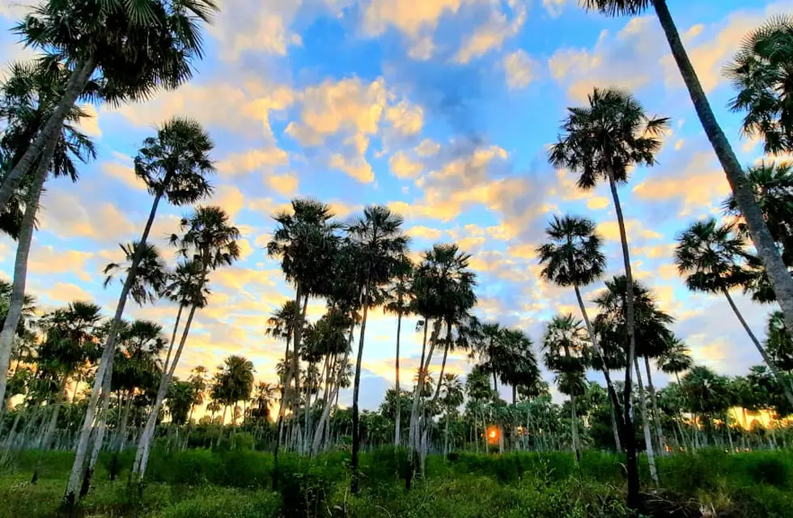
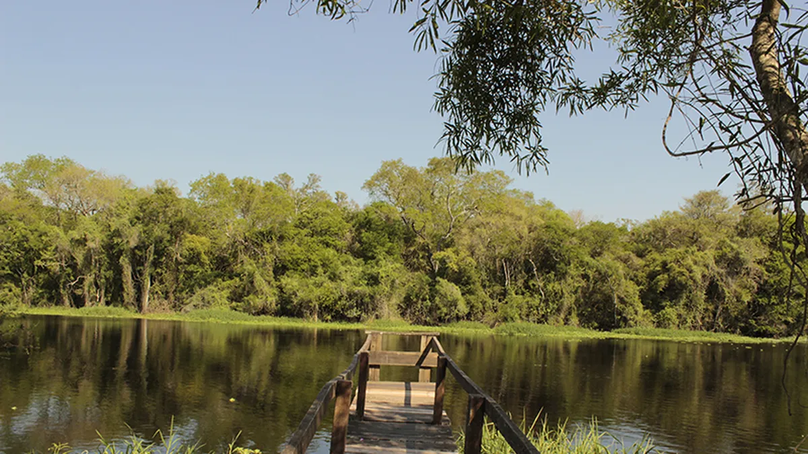
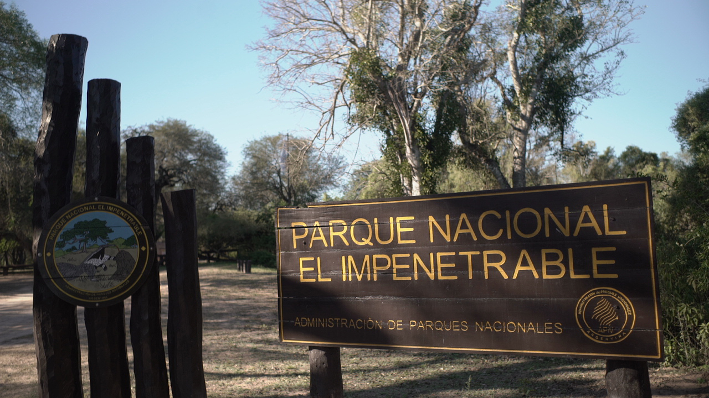
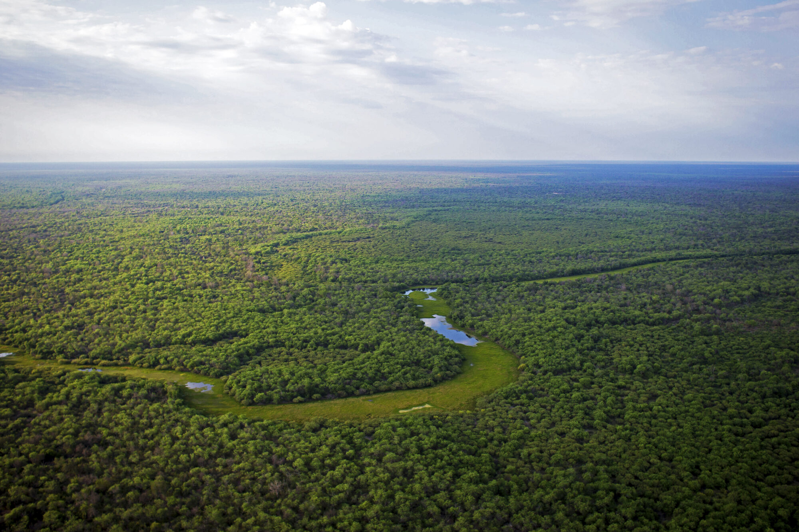
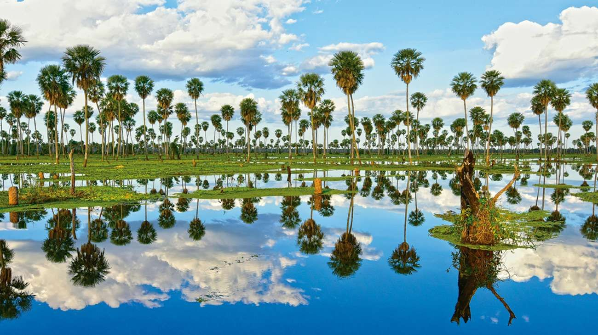

{% extends 'base.html' %}

{% load static %}

{% block contenido %}
<!-- revolution slider -->
<div class="banner-slider">
   <div class="container-fluid">
      <div class="row">
         <div class="col-md-7">
            <div id="slider_main" class="carousel slide" data-ride="carousel">
               <!-- The slideshow -->
               <div class="carousel-inner">
                  <div class="carousel-item active">
                     
                  </div>
                  <div class="carousel-item active">
                     
                  </div>
                  <div class="carousel-item active">
                     
                  </div>
                  <div class="carousel-item active">
                     
                  </div>
                  <div class="carousel-item">
                     
                  </div>
               </div>
               <!-- Left and right controls -->
               <a class="carousel-control-prev" href="#slider_main" data-slide="prev">
               <i class="fa fa-angle-left" aria-hidden="true"></i>
               </a>
               <a class="carousel-control-next" href="#slider_main" data-slide="next">
               <i class="fa fa-angle-right" aria-hidden="true"></i>
               </a>
            </div>
         </div>
         <div class="col-md-5">
            <div class="full slider_cont_section">
               <h3>TURISMO BLOG</h3>
               <h3>Amamos nuestra provincia y queremos conocer tu experincias en los distintos rincones del Chaco</h3>

            </div>
         </div>
      </div>
   </div>
</div>
<!-- end revolution slider -->
{% endblock contenido %}
  